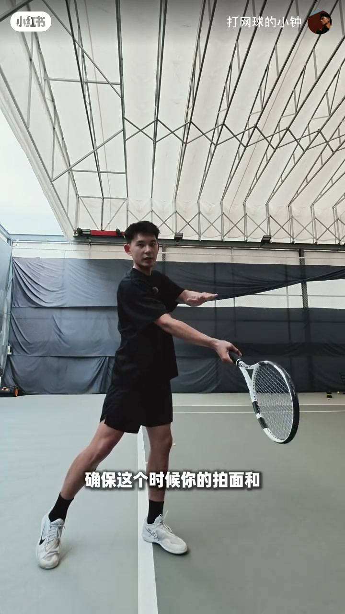
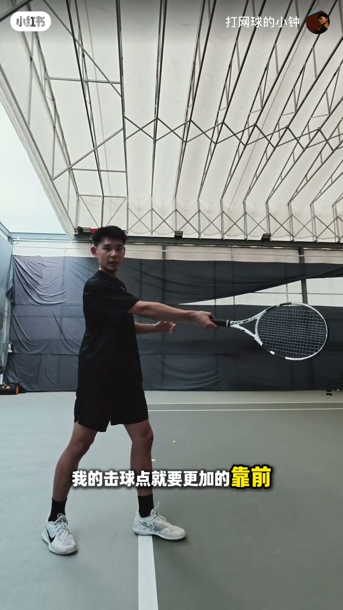
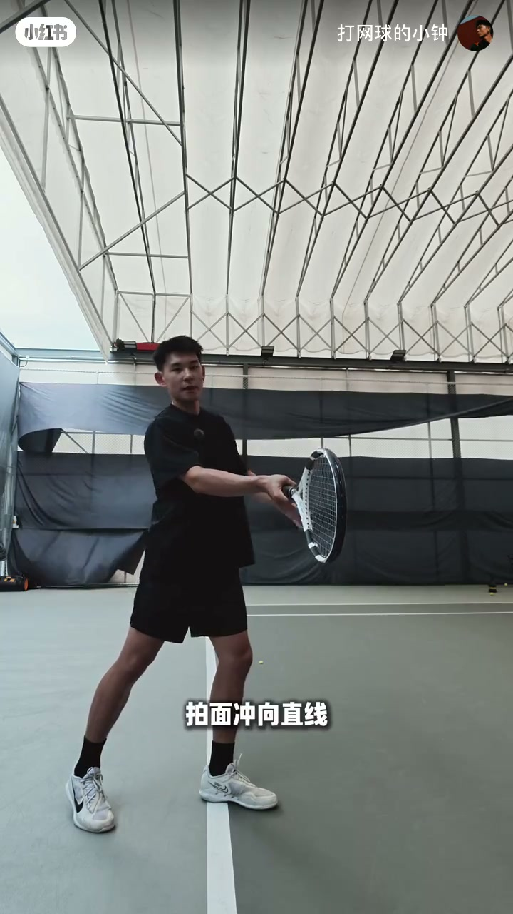
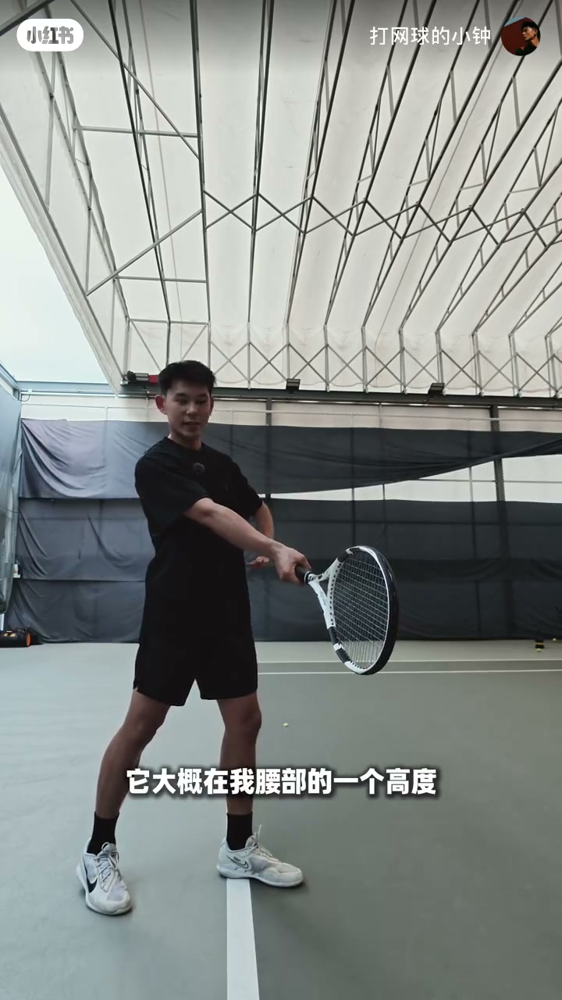
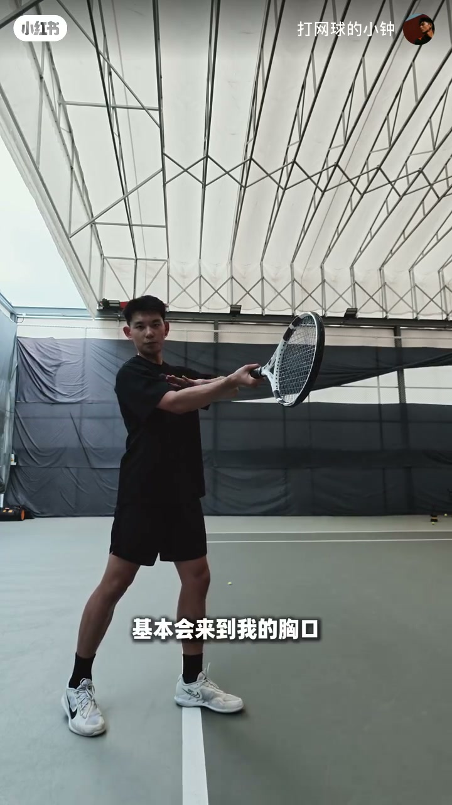
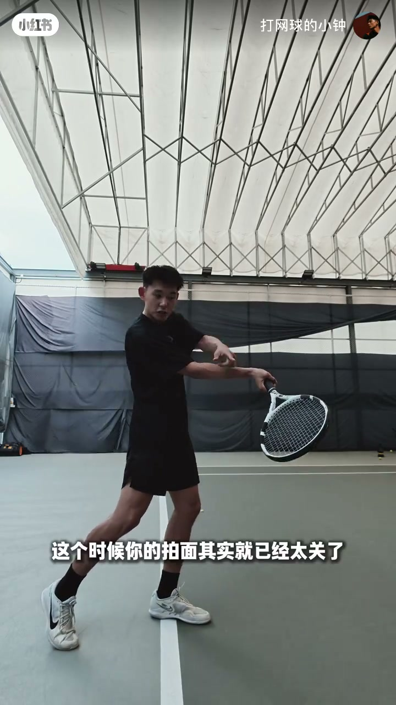

内容要点
这是一堂约两分钟的正手击球点定位课：先给可复现的基准位置，再按线路与握拍做有限调整，并用「拍面太关 / 太开」解释为什么固定「斜前方腰高」并不总是舒服。
知识结构
打球有时顺、有时差点意思，作者归因于击球点；很多人打两年仍说不清自己的击球点该在哪。
关闭式站位：球拍放右脚前→前移约 15–20 公分→平移展开；拍面垂直地面且总体朝前，即基准击球点。
斜线：击球点更靠前，拍面冲斜线；直线：稍晚，约在前脚同侧，拍面冲直线。
东方式≈腰部；半西≈肚脐；西方式≈胸口；超西≈肩膀——握得越「西」，舒适接触点越高。
西方式在腰部击球→拍面过关→下坠或猛刷、无力；东方式抬到胸口/肩→被挤或拍面过开易出界。按握拍与回球自行微调。
先钉死「拍面垂直朝前」的基准点，再按斜线/直线前后挪、按握拍高低调；不要把「斜前方腰高」当成万能公式。
00:00-00:14顺畅与差点意思：往往是击球点在作怪
开场不是堆术语，而是先对准日常体感：有时球打得很顺，有时又「差点意思」。作者直接把原因指向击球点——「所有人都知道击球点很重要」，但「有些人打两年球，他都不一定知道自己的击球点应该在哪」。自我介绍后，本课目标说得很清楚：一起找到自己的击球点。
「有时候打球很顺畅，但有时候好像又差点意思，很可能是你的击球点出了问题。」
00:14-00:32关闭式站位：先找基准击球点
从「比较基础」的关闭式站位入手。操作顺序被拆成可跟着做的三步：把球拍放到右脚前 → 再往前挪大约 15 到 20 公分 → 平移过来、身体舒展开。此时检查两点：拍面与地面垂直，以及拍面总体朝前。作者说，这个位置「基本上就没有问题」——它是后面所有微调的参照原点，而不是最终唯一答案。

00:32-00:51斜线更靠前，直线稍晚一点
基准点定好后，作者马上补一句：击球点会随线路变化。打斜线时，接触要更靠前，好让拍面冲向斜线方向；打直线则相反——击球点「稍微晚一点点」，大约落在身体前脚的同侧，拍面冲向直线。画面上能看到他用手臂伸展位置对比「靠前」与「稍晚」，把抽象的线路选择落成身体前的空间差。


00:51-01:13握拍越「西」，击球点越高
第二部分讲高度：它由握拍决定。以东方式为例，拍面总体冲前时，舒适高度大约在腰部；再转到半西，高度抬到肚脐附近；西方式大致到胸口；超西则到肩膀。作者边转握边抬拍，让观众看到「不是换了个名字，而是接触平面在上升」。结论写得很直白：击球点会随击球线路和握拍一起调整，并不是所有人都该死磕「身体斜前方、腰的高度」。


01:13-01:56握拍与高度错配：关拍刷球或开拍出界
收束段用反例把前面的规则钉死。若握西方式却在腰部击球，拍面其实已经太关：球要么总往下，要么刷得特别多，「打不出力量、不往前走」。反过来，东方式若抬到胸口甚至肩膀，人可能被球挤到，或拍面太开导致出界。作者强调每人还有细微差别，最终要「根据你的握拍、根据你的回球，自己去做调整」——并留下一句练习号召：「试试看」。

「并不是说所有的击球点……身体的斜前方，然后在我的腰的一个高度就一定打得舒服。并不是这样的。」